In good hands
Care that feels personal.
I understand you can’t always give your dog the walks he or she needs, circumstances change.
I'm here to help.
Dog walking & pet care in Woodbridge, Suffolk
Fresh air, new adventures and a friendly face. Personal dog walking and pet pop-ins with Deb, with a little love in every visit.
Caring for local dogs since 2019
A friendly face
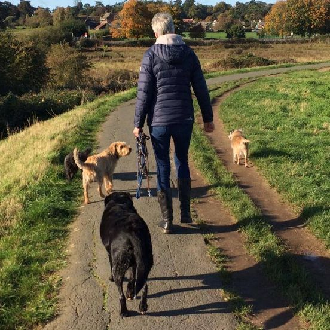
I have been around animals my whole life from childhood dogs, rabbits and guinea pigs to teenage horses and my own dogs when I had a family.
I offer dog walking and pet pop-ins in Woodbridge, Suffolk, and have been walking dogs professionally since November 2019.
Say hello Facebook InstagramIn good hands
I understand you can’t always give your dog the walks he or she needs, circumstances change.
I'm here to help.
I aim to put your mind at rest and take your dog out for new smells and adventure.
In a small group of four I can give your dog the attention they need and we are not too limited to where we can go safely.
Fully insured, with Canine First Aid Level 2 (VTQ).
I carry a basic first aid kit and all necessary details of your vet just in case.
I will always match dogs on particular walks up, some nervous dogs need to walk on their own first to get to know me before being introduced to a few new friends.
A little extra
I make liver-based treats and always walk with a few in my pocket. Ingredients are liver, flour, eggs and a tiny bit of garlic. The mixture is baked and chopped into small squares, freezes well and keeps in an airtight container in the fridge for 3-4 days.
Ideal for training or just a healthy homemade treat.
Available in bags of 200g.
Here to help
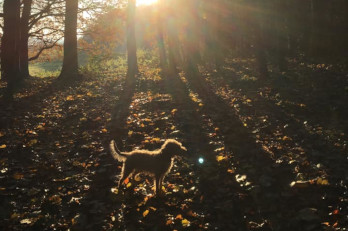
Fresh air & adventure
Does your dog LOVE hearty walks?
This service is for at least a one hour walk.
Collected from your home, transported in crate or secured with harness and seatbelt. Your dog will be with me on or off lead, with no more than 3 other dogs.
Ask about dog walking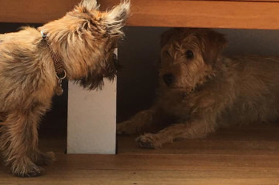
Comfort & company
Does your dog need some medication given during the day? A water refresh, a garden stop & some all-important cuddles with a loving human?
Pop-ins are generally about 20 to 30 minutes to make sure your pet is comfortable and made a fuss of.
Ask about pet pop-insThe best part of the day
A few familiar faces and little adventures from our walks.
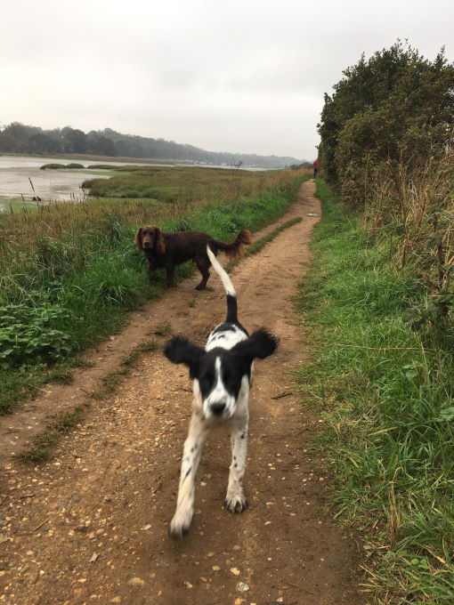
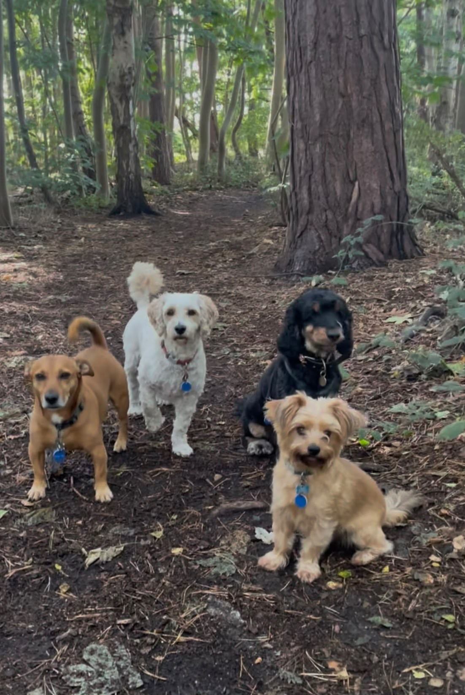
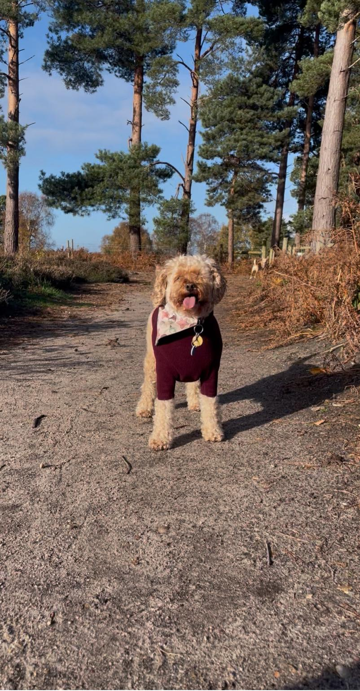
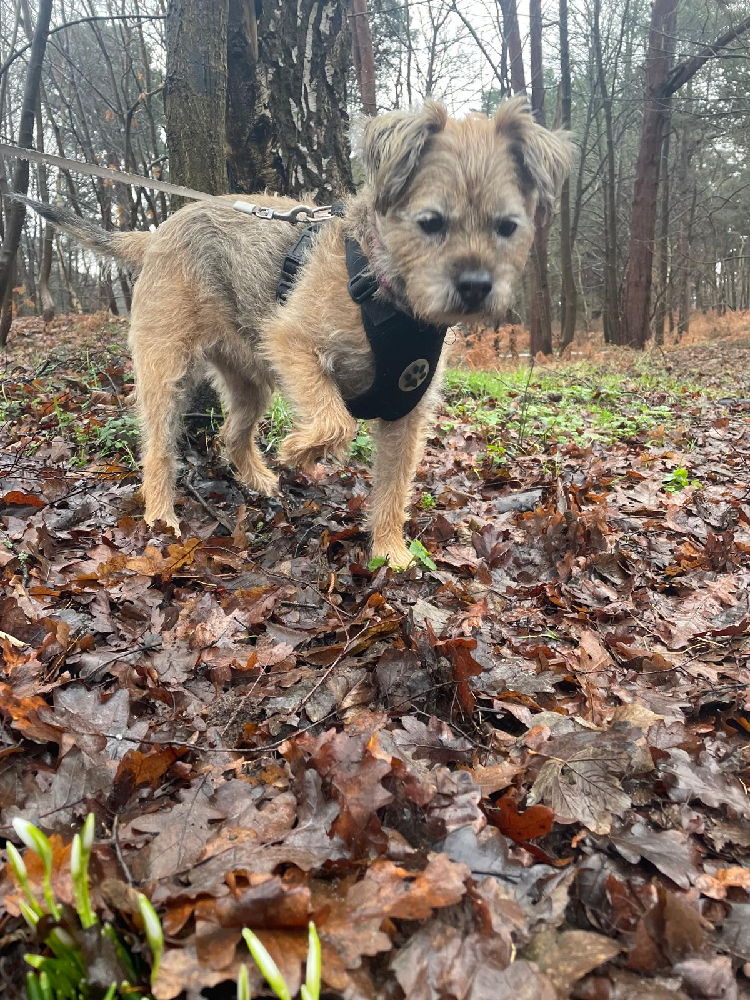
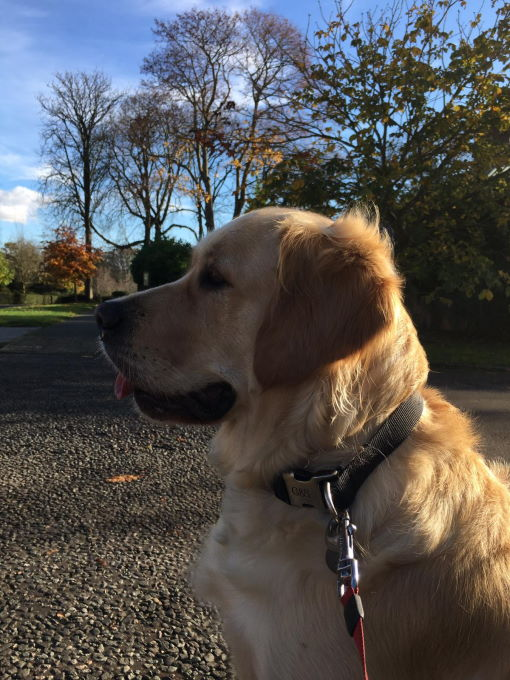
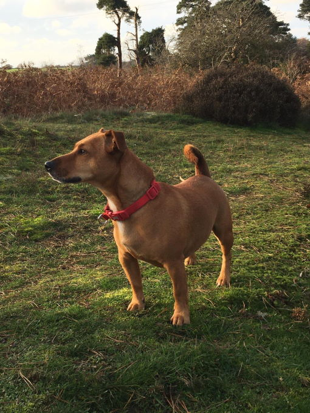
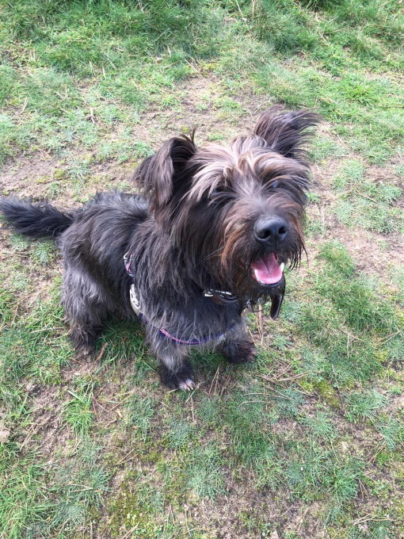
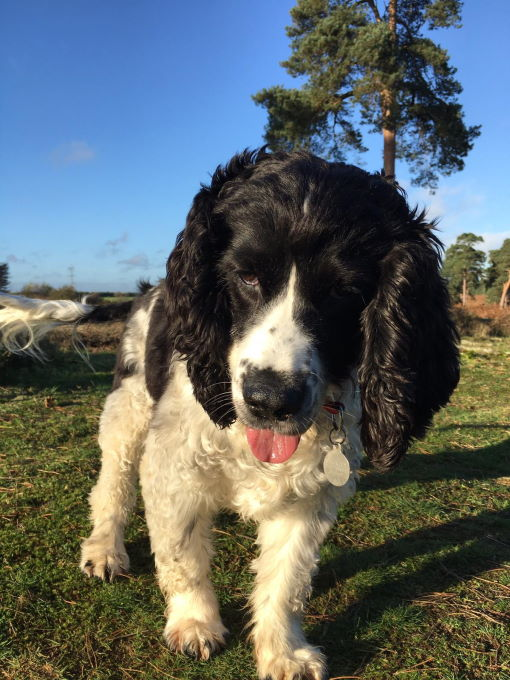
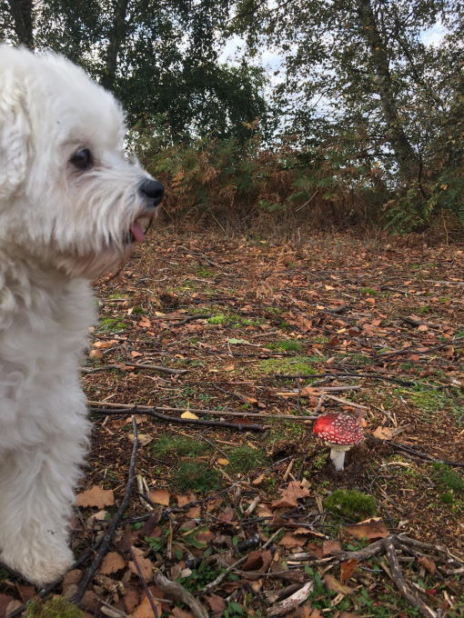
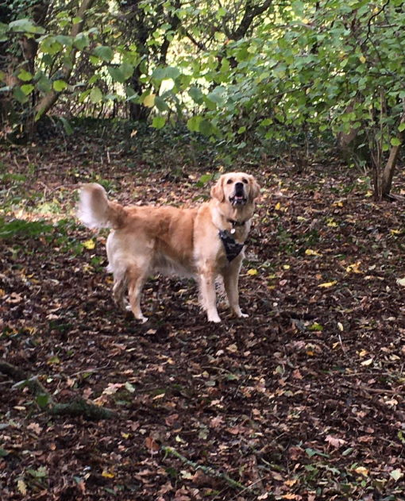
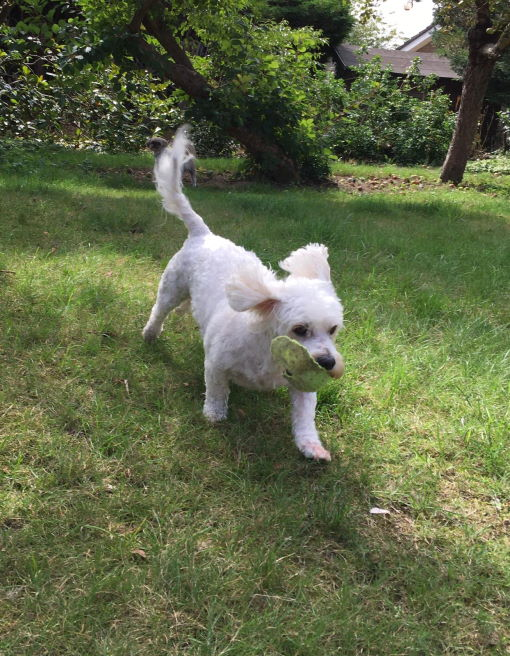
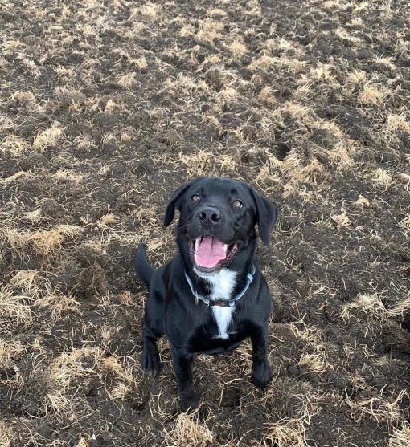
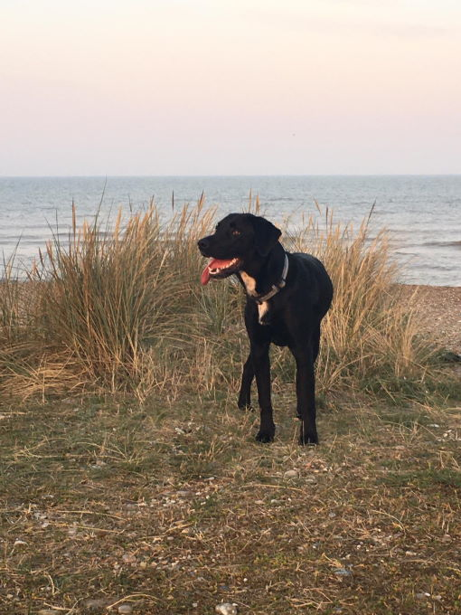
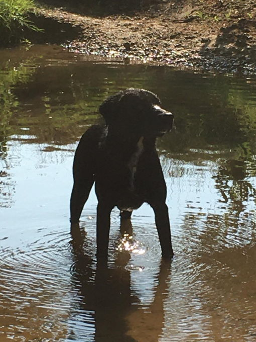
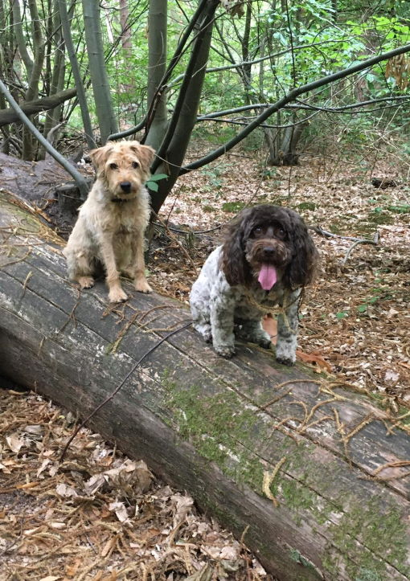
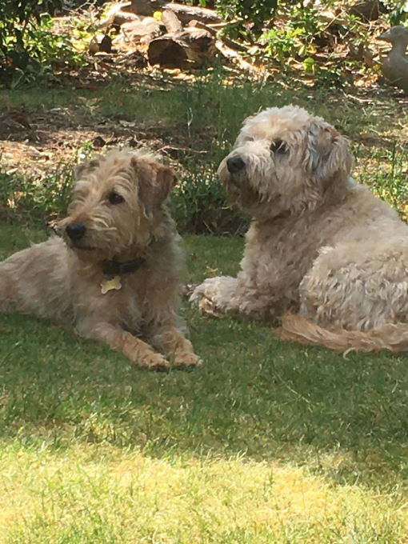
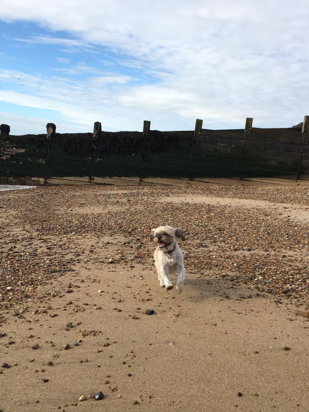
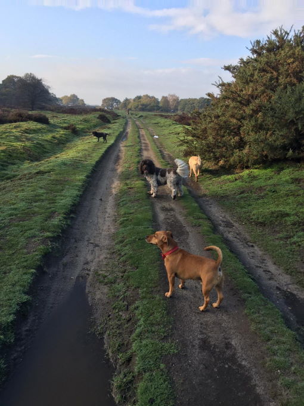
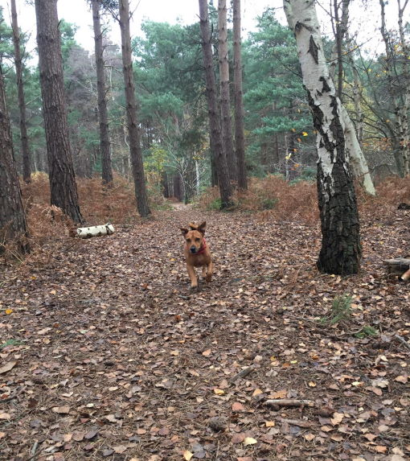
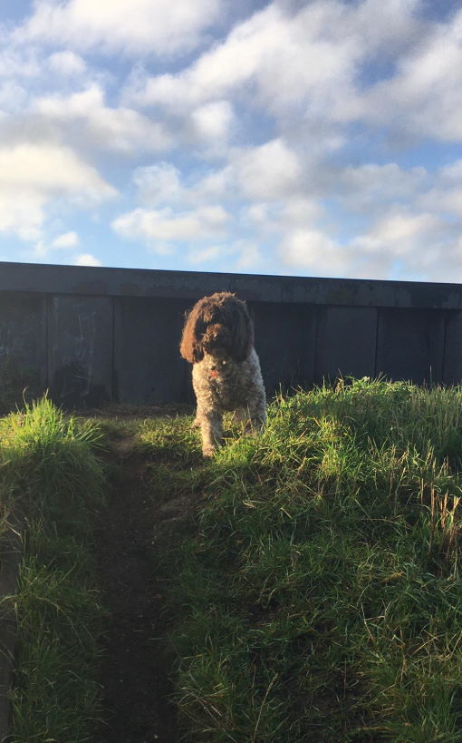
Kind words
Debs has walked my dogs for 7 years. I cannot emphasise how great she is, always trying to accommodate everyone and every dog if extra walks are required.
She is absolutely reliable, I have not been let down once in the 7 years, she sets off in all weathers!
I cannot recommend her enough, you will be very lucky to get your dog on her walks. She looks after them all so well knowing local walks and showing individual attention to each dog.
I don’t hesitate to recommend Woodbridge Wags and Walks and Debs.
Deb has been walking our six-year-old cocker spaniel since he was a pup and it's one of the highpoints of his week, allowing him to socialise with other dogs.
Deb is extremely kind and reliable, and we know he is in safe hands.
Highly recommended.
Let’s say hello
Tell me a little about your dog and what you’re looking for. I’d love to hear from you.